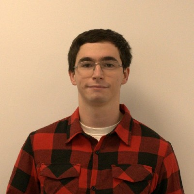

Jorge Puente GarcíaEspañol
Jorge Puente GarcíaEspañolAbout me

Hi, I am Jorge Puente García
I have a degree in Computer Engineering from the University of Oviedo and am currently studying for a master’s degree in Web Engineering. I work as a software developer at TWave, focusing on backend development, web interfaces and industrial communications. Outside work, I am interested in tanks, aircraft and how they appear in films and video games.
- Name
- Jorge Puente García
- Location
- Asturias, Spain
- uo294228@uniovi.es
Education and projects
This personal website is an academic project in which I use semantic HTML, responsive CSS and JavaScript to create accessible interactions. My education and professional experience are detailed below.
The project brings together my interests while putting keyboard navigation, image optimisation and web standards validation into practice.
Education
- Degree in Computer Engineering — University of Oviedo · 2022 – Completed
Graduate in Computer Engineering.
- Master’s degree in Web Engineering · In progress
I am currently studying for a master’s degree in Web Engineering.
Experience
- Software developer — TWave · Cayés · February 2026 – Present
Development of a ticket monitoring application in Python, production bug fixes and Go refactoring to improve efficiency and scalability. Development of a Go tool for network configuration using ConnMan over D-Bus.
- Software engineering internship — TWave · Cayés · June 2025 – February 2026
Implementation of an agentic RAG system using Go, Qdrant, SQLite, S3 storage and models accessed through OpenRouter. Backend development for wireless sensors using MQTT, NATS and Go, and integration of a language model for user assistance.
- Metalworking specialist — SERVEO · Trasona · June 2024 – August 2024
Repair and maintenance of heavy machinery. Participation in emergency shutdown procedures, with a focus on safety and teamwork.
References


Skills and languages
- Backend: Go, C# (.NET), Java and Python.
- Frontend: React, Preact, TypeScript.
- Protocols and communications: MQTT, NATS, OPC, Modbus and D-Bus.
- Problem solving, adaptability, teamwork and initiative.
Native Spanish and B1 English (intermediate).